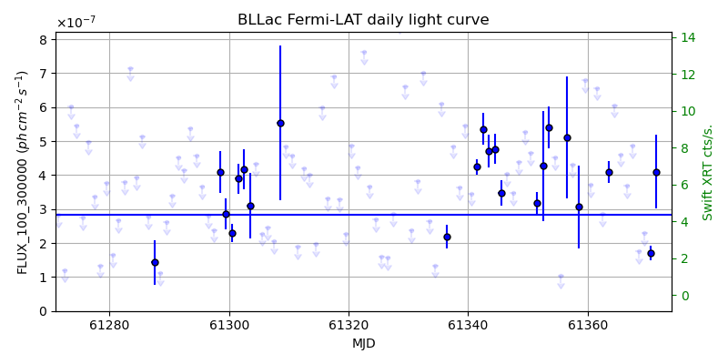
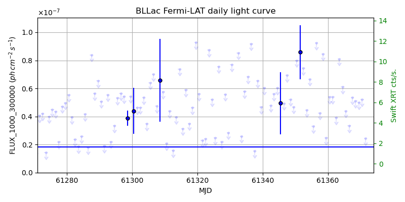

LAT Lightcurve site: https://fermi.gsfc.nasa.gov/ssc/data/access/lat/msl_lc/source/BL_Lac
Swift site: https://www.swift.psu.edu/monitoring/source.php?source=BLLacertae
NED: Query
Time of last update of this page: UT: 2026-11-20 16:29 (MJD: 61364.687)
| Property | Value |
|---|---|
| R.A. | 22:02:43.20 |
| Dec. | 42:16:40.8 |
| z | 0.067 |
| 3FGL SpectrumType | LogParabola |
| 3FGL PL Index | |
| 3FGL Flux_100_300000 | 2.84e-07 1 / (s cm2) |
| 3FGL Flux_1000_300000 | 1.83e-08 1 / (s cm2) |
| 3FGL Flux >200 GeV | 1.47e-11 1 / (s cm2) |
| 3FGL Extrap. Crab >200 GeV | 0.06 |
| 3FGL Flux After EBL Absorption >200GeV | 1.16e-11 1 / (s cm2) |
| 3FGL EBL Crab Fraction >200GeV | 0.05 |

| MJD | dMJD | Flux | dFlux | Frac3FGL | FracCrab>200GeV | EBLFracCrab>200GeV |
|---|---|---|---|---|---|---|
| 61359.50 | 0.50 | 6.79e-07 | 0.00e+00 | 0.00 | 0.00 | 0.00 |
| 61360.50 | 0.50 | 3.71e-07 | 0.00e+00 | 0.00 | 0.00 | 0.00 |
| 61361.50 | 0.50 | 6.56e-07 | 0.00e+00 | 0.00 | 0.00 | 0.00 |
| 61362.50 | 0.50 | 2.85e-07 | 0.00e+00 | 0.00 | 0.00 | 0.00 |
| 61363.50 | 0.50 | 4.09e-07 | 3.27e-08 | 1.44 | 0.09 | 0.07 |
| MJD | dMJD | Flux | dFlux | Frac3FGL | FracCrab>200GeV | EBLFracCrab>200GeV |
|---|---|---|---|---|---|---|
| 61328.50 | 3.50 | 1.87e-07 | 0.00e+00 | 0.00 | 0.00 | 0.00 |
| 61335.50 | 3.50 | 1.86e-07 | 4.80e-08 | 0.66 | 0.04 | 0.03 |
| 61342.50 | 3.50 | 4.03e-07 | 3.99e-08 | 1.42 | 0.09 | 0.07 |
| 61349.50 | 3.50 | 2.09e-07 | 2.29e-09 | 0.74 | 0.05 | 0.04 |
| 61356.50 | 3.50 | 3.68e-07 | 1.90e-08 | 1.30 | 0.08 | 0.06 |

| MJD | dMJD | Flux | dFlux | Frac3FGL | FracCrab>200GeV | EBLFracCrab>200GeV |
|---|---|---|---|---|---|---|
| 61359.50 | 0.50 | 2.47e-08 | 0.00e+00 | 0.00 | 0.00 | 0.00 |
| 61360.50 | 0.50 | 5.38e-08 | 0.00e+00 | 0.00 | 0.00 | 0.00 |
| 61361.50 | 0.50 | 5.37e-08 | 0.00e+00 | 0.00 | 0.00 | 0.00 |
| 61362.50 | 0.50 | 3.91e-08 | 0.00e+00 | 0.00 | 0.00 | 0.00 |
| 61363.50 | 0.50 | 8.10e-08 | 0.00e+00 | 0.00 | 0.00 | 0.00 |

| MJD | dMJD | Flux | dFlux | Frac3FGL | FracCrab>200GeV | EBLFracCrab>200GeV |
|---|---|---|---|---|---|---|
| 61328.50 | 3.50 | 2.26e-08 | 0.00e+00 | 0.00 | 0.00 | 0.00 |
| 61335.50 | 3.50 | 1.81e-08 | 5.79e-09 | 0.99 | 0.06 | 0.05 |
| 61342.50 | 3.50 | 2.65e-08 | 6.51e-09 | 1.45 | 0.09 | 0.07 |
| 61349.50 | 3.50 | 3.74e-08 | 1.21e-09 | 2.05 | 0.13 | 0.10 |
| 61356.50 | 3.50 | 2.61e-08 | 6.75e-09 | 1.43 | 0.09 | 0.07 |
--------------------------------------------------------- Using user-supplied coords: 22:02:43.20 42:16:40.8 2000 --------------------------------------------------------- FLWO UT night of: 2026-11-21 Local Sid. @ Midnight: 03:37 Sunset (-15.0) (local, UT): 18:33 01:33 Sunrise (-15.0) (local, UT): 05:47 12:47 Moonrise (local, UT): Moonset (local, UT): 03:40 10:40 Moon phase: 0.85 --------------------------------------------------------- AzTime LSID UT Obj_el Obj_az Mn_el Mn_az Sep. --------------------------------------------------------- 18:33 22:09 01:33 79.2 354.8 47.9 117.4 48.7 19:03 22:39 02:03 77.2 329.3 53.3 125.0 48.7 19:33 23:09 02:33 73.2 314.2 58.2 134.7 48.6 20:03 23:39 03:03 68.2 306.3 62.3 146.9 48.6 20:33 00:09 03:33 62.9 302.3 65.1 162.1 48.6 21:03 00:39 04:03 57.5 300.4 66.3 179.7 48.6 21:33 01:09 04:33 51.9 299.8 65.4 197.5 48.6 22:03 01:39 05:03 46.4 300.1 62.9 213.2 48.6 22:33 02:09 05:33 40.9 300.9 59.0 225.9 48.6 23:03 02:39 06:03 35.4 302.3 54.2 235.9 48.6 23:33 03:09 06:33 30.1 304.0 48.9 243.9 48.6 00:03 03:39 07:03 24.8 306.0 43.2 250.4 48.6 00:33 04:10 07:33 19.7 308.4 37.3 255.9 48.7 01:03 04:40 08:03 14.8 311.1 31.2 260.7 48.7 01:33 05:10 08:33 10.1 314.1 25.1 265.1 48.7 02:03 05:40 09:03 5.7 317.4 19.0 269.2 48.8 02:33 06:10 09:33 1.7 321.0 12.9 273.0 48.9 03:03 06:40 10:03 -1.4 325.0 6.8 276.9 48.9 03:33 07:10 10:33 -5.7 329.4 1.0 280.7 49.0 04:03 07:40 11:03 -8.9 334.1 -4.9 284.7 49.1 04:33 08:10 11:33 -11.5 339.1 -11.1 288.8 49.2 05:03 08:40 12:03 -13.5 344.4 -16.8 293.2 49.3 05:33 09:10 12:33 -14.9 349.9 -22.3 298.1 49.5 05:47 09:25 12:47 -15.4 352.6 -24.8 300.5 49.5 --------------------------------------------------------- Dark hours >55 deg.: 0.00